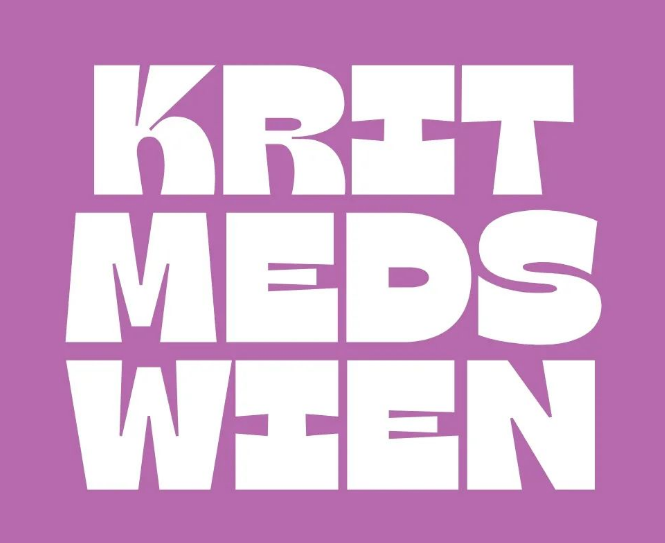

Kritische Medizin Wien
offene Hochschulgruppe für gesundheitspolitische Themen,
kritische Lehre und Medizin in sozialer Verantwortung

Wer sind wir?
Plenum
Das wurde beim letzten Plenum besprochen
- Wir haben eine Awareness Person im Team
- Wie treffen wir als Gruppe Entscheidungen
- Diverse Ideen und Projekte für das kommende Sommersemester
Instagram